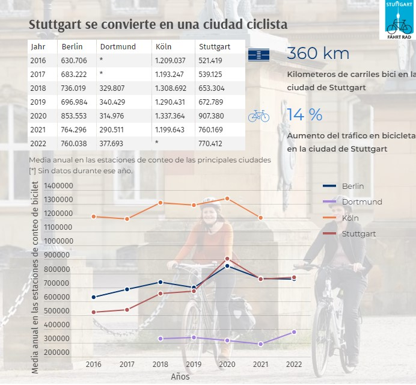

Visualización 1: Infografia
Fuente datos:
Los datos utilizados han sido obtenidos de varios portales de open data de ciudades alemanas. Posteriormente se han analizado para obtener las medias anuales para cada ciudad.
Stuttgart - Radfahrende nach Zählstelle
Berlin - Zählstellen und Fahrradbarometer: Fahrradverkehr in Zahlen
Dortmund - Dauerzählstelle Radverkehr Schnettkerbrücke
Köln - Fahrrad Verkehrsdaten
Creada con:
Para crear esta visualización se utilizó
Infogram
.
